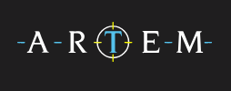

Sales Operative - Lawsons, Timber, Building and Fencing Supplies
August 2013 - Descember 2015
A family run builders merchants, focusing on family values and sustainability.
- Dealt with customers directly
- Physically assisted customers in loading materials
- Processed orders and queries over the phone and email
- Merchandised and stocked the shopfront
- Aquired multiple Forklift licenses
- Managed customer accounts
Exhibit Designer and Fabricator - Science Projects Ltd
January 2016 - July 2022
A fantastic charity that designs and builds interactive science exhibits for museums around the world.
- I got to work with metal, wood and plastic
- I learned how to TIG weld, and work with stainless steel
- I taught myself Solidworks, and desinged exhibits and furniture for exhibitions
- I worked as admin cover and organised several work trips for installations across the globe
Special Effects Technician
August 2022 - October 2024
An industry cornerstone in the world of special effects.
- I honed my machinist skills and fabricated props and parts that have entertained millions
- Coded TIG welder for both aluminium and steel
- Fabricated the steel frame and bodywork for a piano for Adele's Vegas residency
- I was part of the core team for the protytpe and production of the props for Stranger Thing the First Shadow